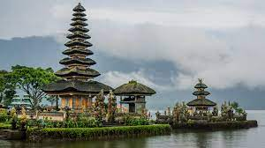

Selamat Datang Di Travel Nusantara
Menu
Login
Home
Daftar
Berita
Bali Menjadi Destinasi Wisata Paling Banyak Dikunjungi Selama Pandami COVID-19

Baca Selengkapnya >>
Wisata Populer
Bali
Labuhan Bajo
Banda Neira